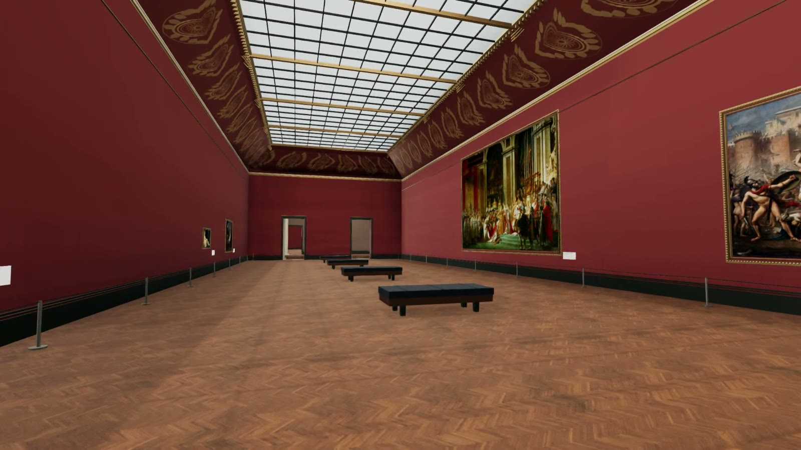

louvre
interactive gallery · oct 2026

A walk through four connected Louvre galleries.
Explore the rooms, stop at a painting, and look a little closer.
WASD to walk · mouse or drag to look
click a painting or its label for details
loading the paintings